Префектура Киото · Киото · храмы
Храм Тодзи: мандала Кукая в 21 статуе и пятиярусная пагода у вокзала Киото
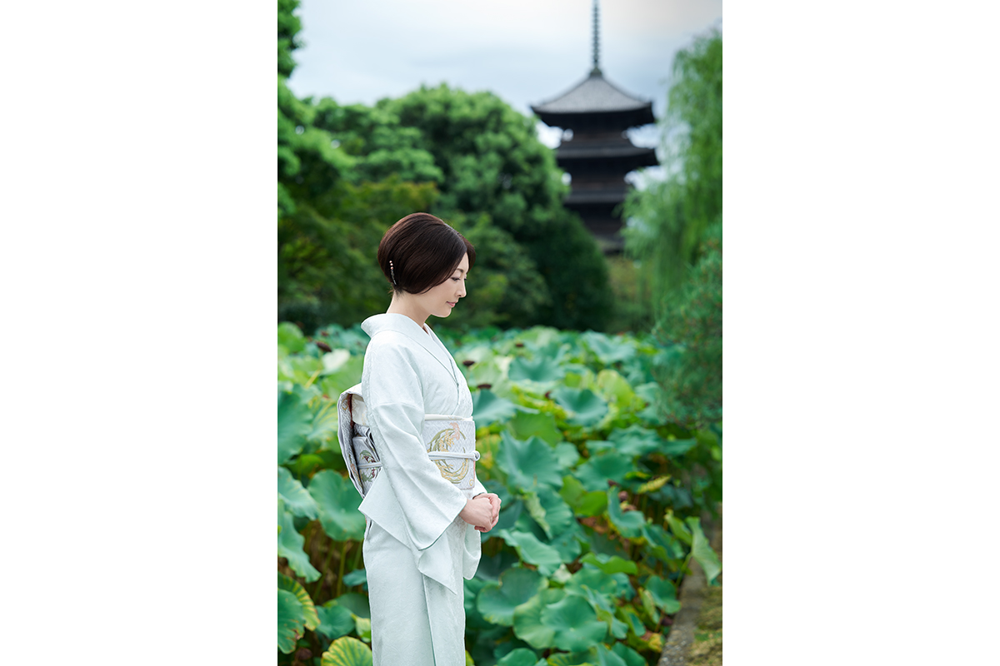
Пагоду храма Тодзи видно прямо с платформы синкансэна на вокзале Киото, и для многих японцев она означает: вот я и в Киото. Двенадцать веков назад монах Кукай сделал этот храм главным домом своей школы, а в одном из залов собрал из статуй трёхмерную мандалу.
История
Храм, подаренный императором
Тодзи, «Восточный храм», основали в 796 году, через два года после того, как столицу перенесли в новый город Хэйан, нынешний Киото. У южного края столицы стояли главные ворота Расёмон, и по обе стороны от них построили два государственных храма: Тодзи на востоке и Сайдзи на западе. Они охраняли императорский дворец и всю страну. Других храмов внутри новой столицы строить тогда не разрешали. Ворота Расёмон и Западный храм давно исчезли, и Тодзи остался единственным зданием той эпохи, дожившим до наших дней.
В 823 году император Сага (786–842) передал храм монаху Кукаю (774–835). Кукай учился в Китае эзотерическому буддизму и, вернувшись, основал в Японии школу Сингон. Так Тодзи стал первым эзотерическим храмом страны и главным местом учения Сингон. В 2023 году здесь отмечали 1200 лет с этого события и с рождения самой школы.
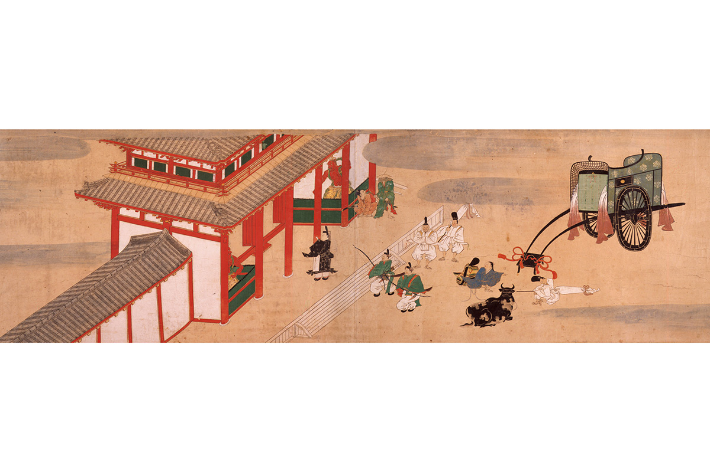
Сначала Тодзи был обычным государственным храмом, и главным его божеством был будда Якуси, целитель. Кукай не стал этого менять, а соединил старое назначение храма со своим учением. Для уединённой практики он открыл монастырь на горе Коя, в горах к югу от Киото, а проповедовать предпочитал в столице.
«На горе Коя Кукай устроил место для практики. Но для проповеди нужен город, где много людей. Поэтому храм, подаренный императором, он сделал своей опорой»
управляющий делами храма Тодзи
На склоне лет Кукай переселился на гору Коя и написал стихи: «Тело на Коя, а сердце оставляю в Тодзи». По преданию, когда он покидал храм, заплакал даже грозный Фудо-мёо, божество гнева.
Учение Сингон говорит, что стать буддой можно в этом теле, в этой жизни. Словами такое не объяснить, поэтому главное передают через образы: мандалы и статуи. Сингон к тому же обещал помощь и в земных делах, и для начала IX века это была совсем новая мысль. Кукай умел многое: он был монахом, инженером, учителем. В народе его до сих пор ласково зовут «Кобо-сан» или «О-дайси-сан», и почитали его все, от императорской семьи до простых людей.
Территория
Пагода, золотой зал и рынок по 21-м числам
От выхода Хатидзё-гути вокзала Киото до храма около 15 минут пешком. Территория огромная и открытая, и это видно по рынкам. В первое воскресенье месяца здесь работает антикварный рынок, а 21-го числа, в день памяти Кукая, проходит рынок Кобо-ити: между залами, внесёнными в список Всемирного наследия ЮНЕСКО, выстраиваются сотни лотков. Так в Киото было веками. Говорят, и весь храм спланирован по образцу мандалы, чтобы показать учение уже в расположении зданий.
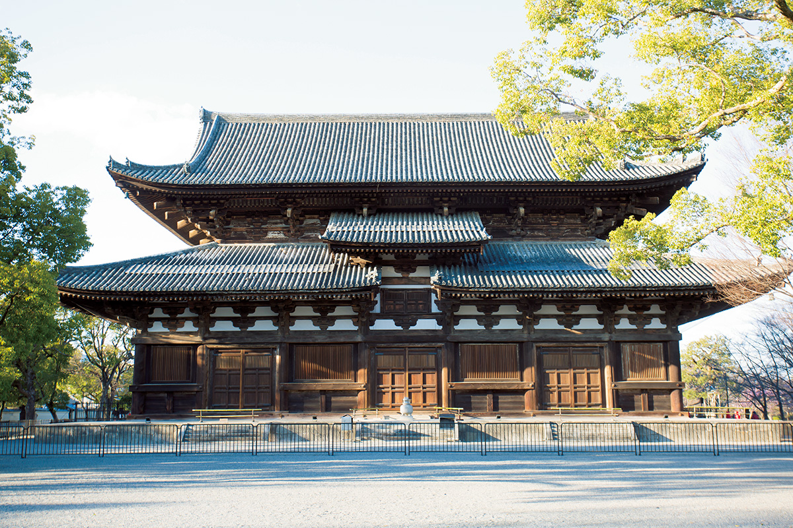
Кондо, «Золотой зал», был единственным достроенным зданием, когда храм передали Кукаю. Нынешний зал построен в конце XVI века, в эпоху Момояма, в стиле, который в Японии называют «индийским». Это национальное сокровище. Внутри сидит будда Якуси, тот самый целитель, ради которого храм и строили.
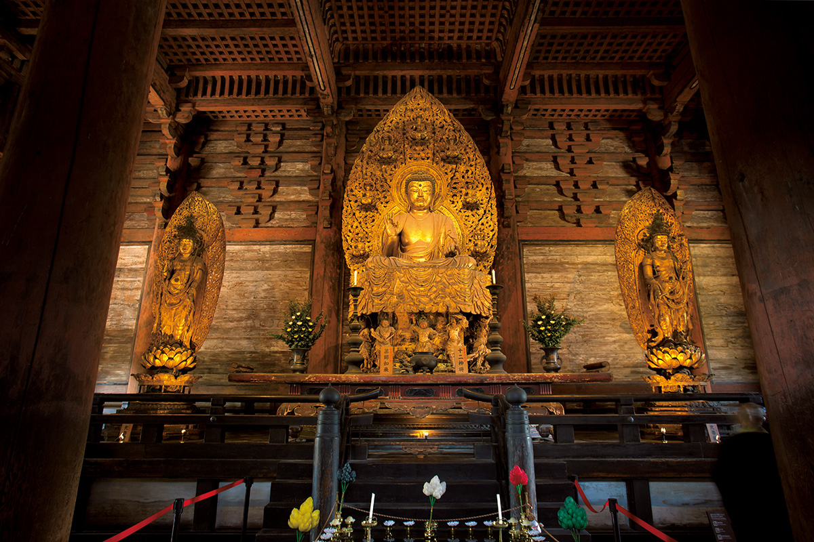
Рядом стоит зал Кодо, «Зал проповеди». Кукай начал строить его в 823 году, а закончили уже после его смерти, в 839 году. Нынешнее здание восстановили в XV–XVI веках, в эпоху Муромати. Внутри хранится объёмная мандала, о которой рассказ ниже.
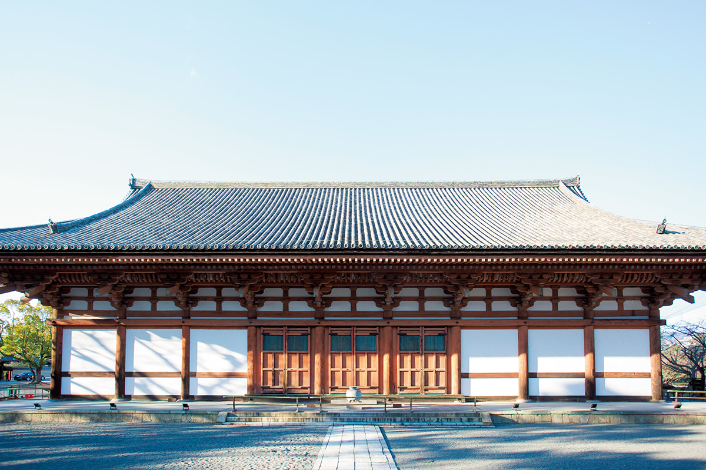
Есть в храме и закрытое место: зал Кандзё-ин. Здесь проводят кандзё, тайный обряд посвящения. Избранному монаху льют воду на макушку, и так он связывает себя с буддами и мандалой и становится законным наследником учения.
Пагода
55 метров дерева, которые не падали от землетрясений
Пятиярусная пагода стала символом не только Тодзи, но и всего Киото. Её высота около 55 м, и это самое высокое деревянное здание в Японии. Пагода сгорала четыре раза, в том числе от молний, и каждый раз её строили заново. Нынешняя, пятая по счёту, стоит с 1644 года и признана национальным сокровищем.
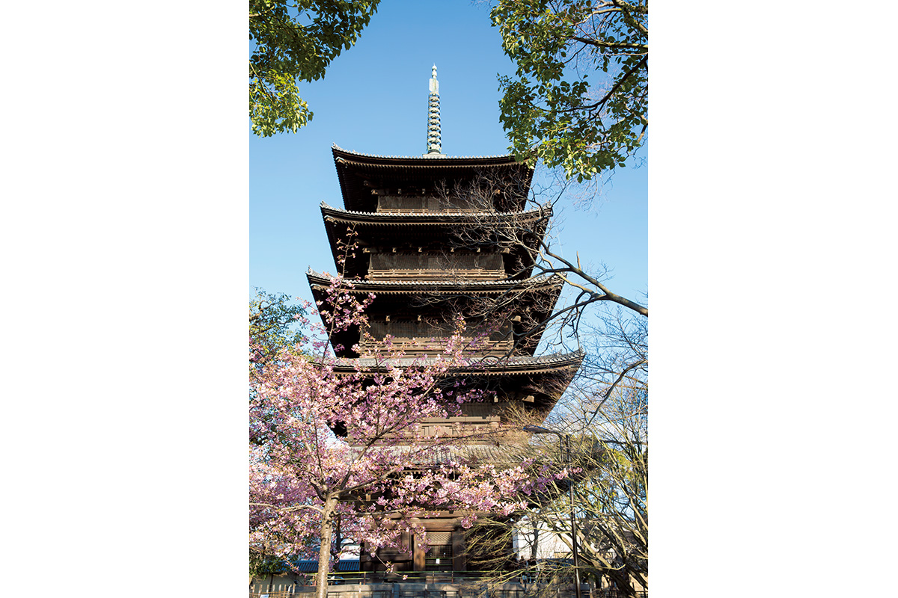
«От пожаров пагода гибла, но от землетрясения не упала ни разу. Ярусы качаются каждый по-своему и гасят толчки. Такую же конструкцию использовали в телебашне Tokyo Skytree»
управляющий делами храма Тодзи
Осенью 2023 года пагоду посетила актриса, посол культуры и туризма префектуры Киото. Снаружи пагода строгая и тёмная, а первый ярус внутри сияет золотом и красками. Вокруг центрального столба сидят четыре будды: Асюку на востоке, Хосё на юге, Амида на западе и Фукудзёдзю на севере. Это четыре из пяти «будд мудрости», и пятого, главного будду Дайнити, здесь не найти. Объяснение простое: Дайнити считают сам центральный столб. Выходит, что вся пагода и есть Дайнити.
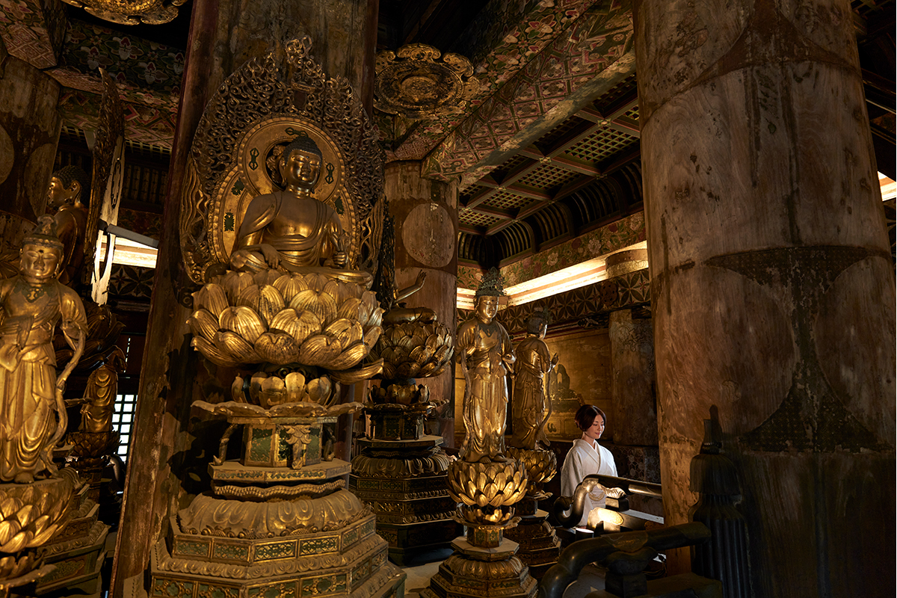
«Я не думала, что внутри пагоды такой яркий и пышный мир. Даже сегодня от этого захватывает дух»
актриса, посол культуры и туризма префектуры Киото
На стенах написаны восемь патриархов Сингон: учителя, через которых учение дошло от Индии через Китай до Японии, и последний из них сам Кукай.
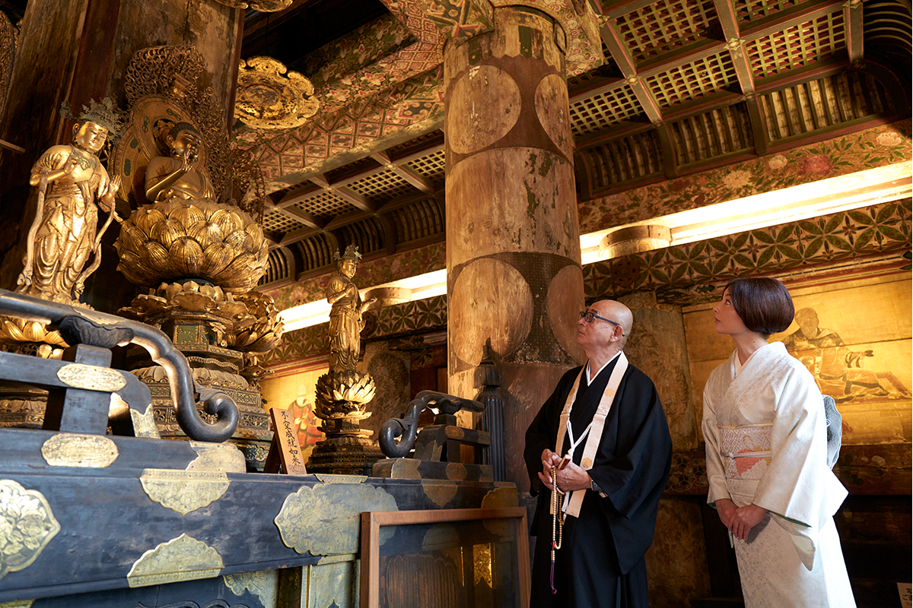
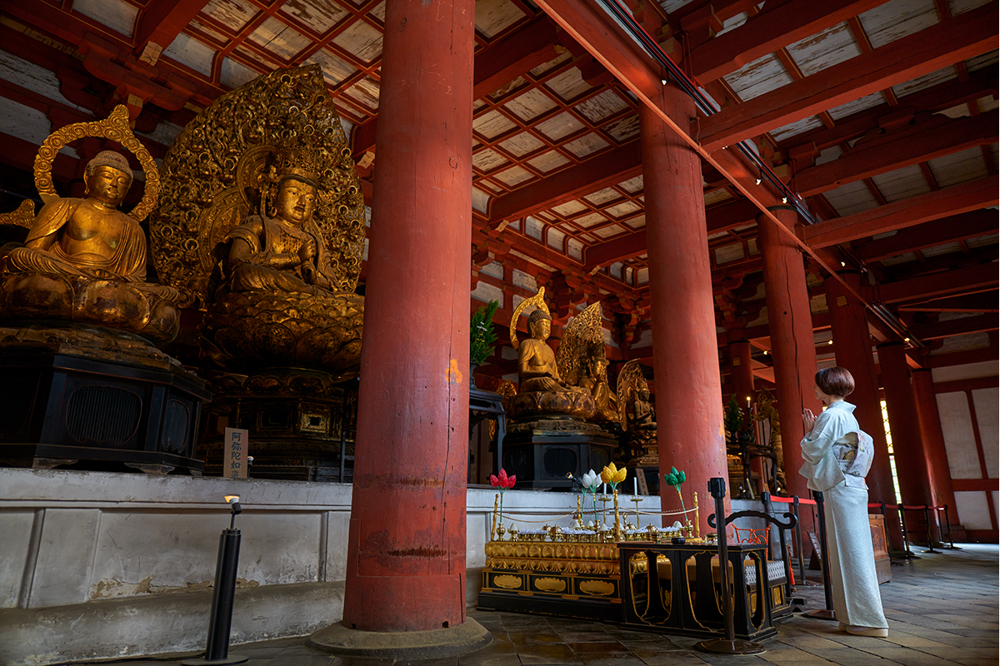
Мандала
21 статуя вместо картины
Мандала обычно нарисована на ткани или бумаге: это схема мира, в центре которой будда Дайнити, а вокруг остальные будды и божества. Кукай пошёл дальше и превратил её в скульптуру. В зале Кодо 21 статуя: в центре пять будд мудрости во главе с Дайнити, справа и слева пять бодхисаттв и пять мёо, «светлых царей» с гневными лицами, а по четырём углам помоста стоят стражи: четыре небесных царя и двое высших богов, Бонтэн и Тайсякутэн. Из 21 статуи 15 сделаны ещё в эпоху Хэйан, а национальным сокровищем признаны 16.
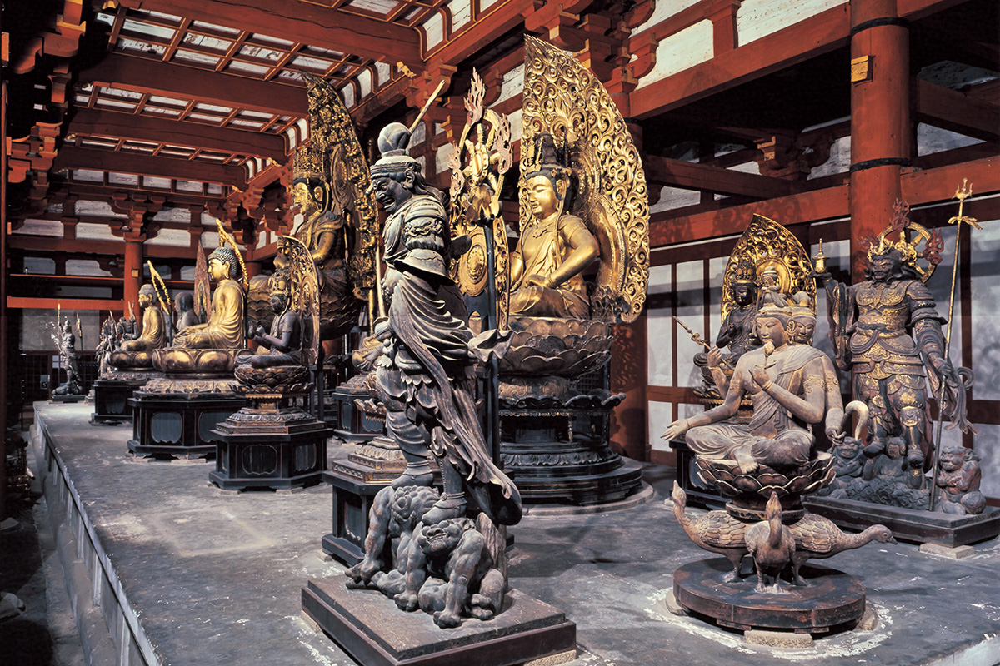
Состав статуй Кукай собрал из двух сутр и своих собственных идей, и такой мандалы больше нет нигде. Увидеть её готовой он не успел: умер за четыре года до освящения зала. В 2019 году большую часть статуй на время вывозили на выставку в Токийский национальный музей, но понять, каким Кукай видел этот мир, можно только здесь, в зале, где они стоят по его замыслу.
У Дайнити в центре зала корона и украшения на шее и руках, хотя будд обычно изображают в простой монашеской одежде, как принца Шакьямуни, ушедшего из дворца. Об этом актриса спросила управляющего делами храма.
«Украшения носят те, кто ещё в пути к просветлению. Дайнити показан просветлённым прямо в украшениях, с беспокойным сердцем, какое есть у нас. Стать буддой можно таким, какой ты есть. Мандала как зеркало: она показывает твоё собственное сердце. Будда не где-то над тобой, он внутри тебя»
управляющий делами храма Тодзи
«Можно оставаться собой: это очень созвучно нашему времени. Сюда хочется приходить снова и снова»
актриса, посол культуры и туризма префектуры Киото
Пять будд мудрости
У Дайнити пять видов мудрости, и каждый воплощён в одном будде. В центре сам Дайнити: мудрость всей вселенной. Асюку на востоке видит всё как в зеркале, Хосё на юге осознаёт единство со всем живым, Амида на западе наблюдает и ведёт людей, Фукудзёдзю на севере доводит до конца то, что должно быть сделано.
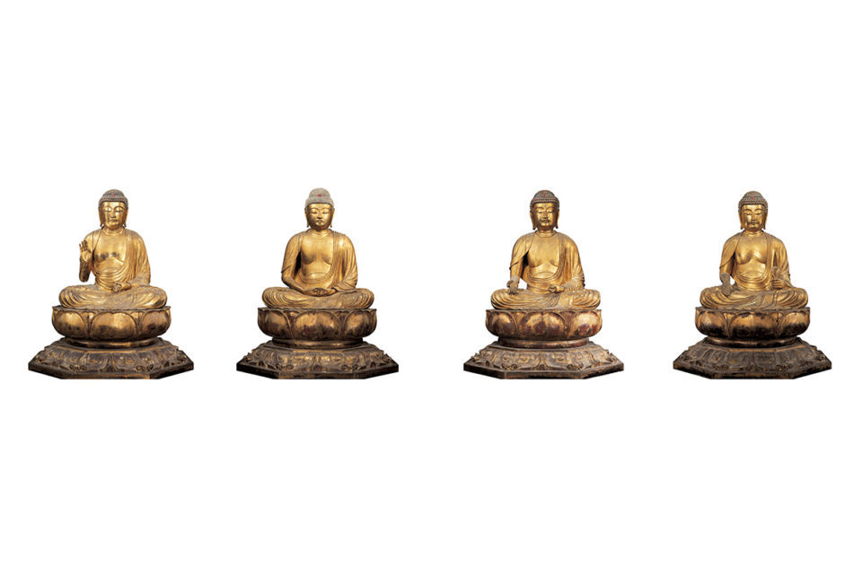
В 1486 году во время крестьянского бунта зал сгорел вместе со всеми пятью буддами. Дайнити высотой 284 см восстановили уже в 1497 году, его руки сложены в «кулак мудрости». Остальных четырёх вырезали заново в 1834 году, но голову Амиды, как считают, взяли от более старой статуи конца эпохи Хэйан. Асюку касается правой рукой земли: этим жестом Шакьямуни прогнал демонов, пытавшихся сбить его с пути. Хосё раскрывает ладонь в жесте исполнения желаний и приносит удачу и достаток, а Фукудзёдзю поднимает ладонь в жесте бесстрашия. Все пять статуй относятся к важному культурному достоянию Японии.
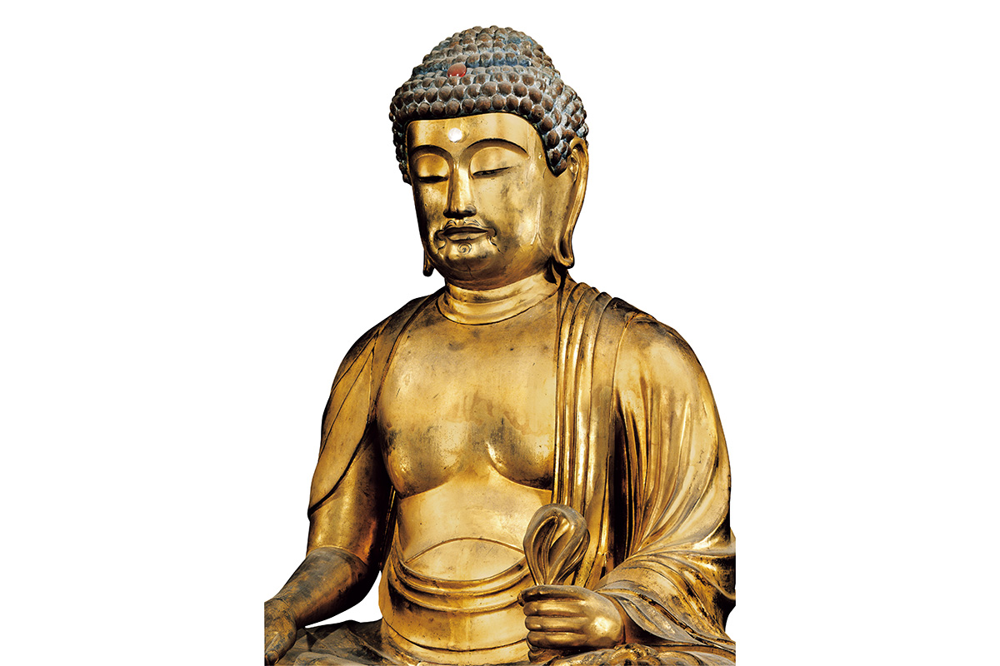
Пять бодхисаттв
Бодхисаттва это тот, кто ищет просветления и ради спасения людей продолжает путь. Их изображают в облике Шакьямуни до просветления, в короне и украшениях. Справа от будд в зале Кодо сидят пять бодхисаттв, каждый воплощает одного из пяти будд. В центре стоит Конго-харамитта, бодхисаттва совершенства. Вокруг него четверо: Конго-сатта держит ритуальные колокольчик и ваджру, бодхисаттва Алмазной драгоценности раскрывает ладонь в жесте исполнения желаний (в другой руке когда-то лежала жемчужина, она утрачена), бодхисаттва Алмазного закона сжимает «алмазный кулак», один из основных жестов Сингон, а бодхисаттва Алмазного деяния, как и трое других, входит в шестнадцать великих бодхисаттв мандалы.
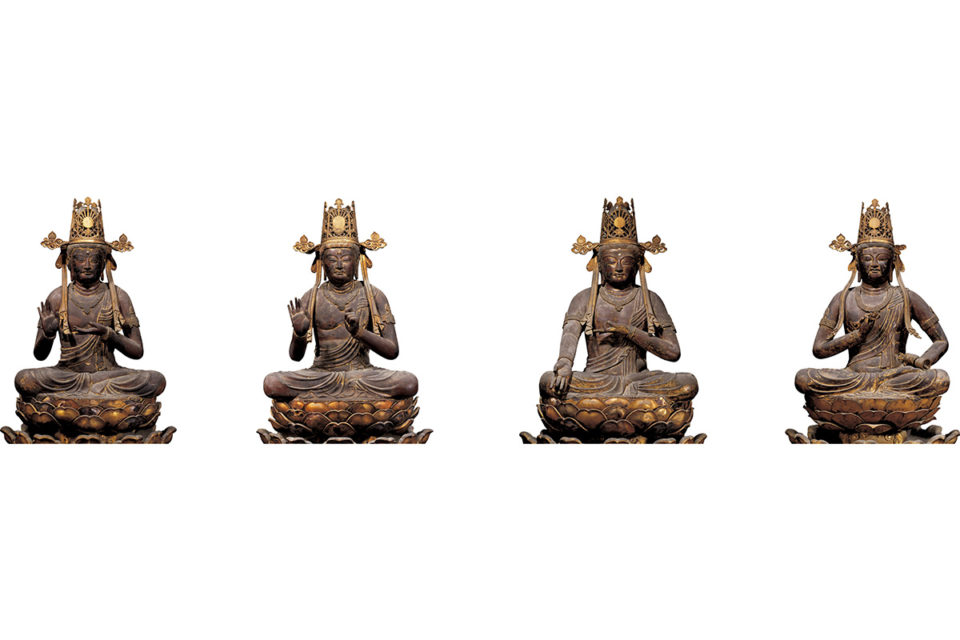
Такого состава пяти бодхисаттв больше нигде не встретишь, и его считают замыслом самого Кукая. Центральный бодхисаттва высотой 197 см сгорел в 1486 году и был восстановлен позже, а четверо остальных сохранились с IX века. В них ещё видна техника резьбы эпохи Нара, но приметы эзотерического учения, ритуальные предметы и особые жесты рук, в японской скульптуре до Кукая не встречались.
Пять мёо
Мёо, «светлые цари», появились только с эзотерическим учением. Это индийские божества, которых буддизм сделал своими защитниками. Тех, кого не спасти мягкостью будд и бодхисаттв, они ведут силой, и лица у них искажены гневом. Но этот гнев сродни гневу матери, которая ругает ребёнка ради него самого: он сметает страсти, соблазны и всё, что мешает на пути. Пять мёо воплощают пятерых будд мудрости.
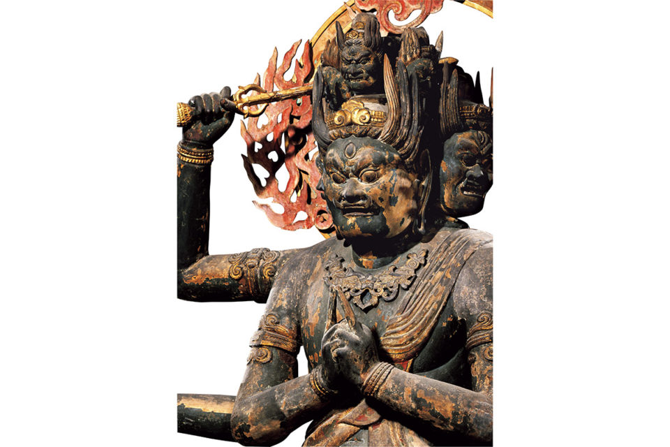
В центре сидит Фудо, воплощение Дайнити, высотой 173 см: за его спиной пламя, сжигающее страсти, в правой руке меч против демонов, в левой аркан из пятицветных нитей, чтобы вытаскивать людей. У Годзандзэ четыре лица и восемь рук, ногами он попирает индийского бога Шиву и его супругу. У Гундари три глаза и восемь рук, его тело обвивают змеи, это четыре страсти: глупость, самомнение, гордыня и себялюбие. Дайитоку с шестью лицами, шестью руками и шестью ногами едет на синем буйволе, на котором ездит индийский бог смерти Яма. Конго-яся с тремя лицами и шестью руками держит ваджры, аркан, меч, лук и стрелы, а у среднего его лица пять глаз.
Таких многоруких фигур в Японии до эзотерического учения не было, и всё же они получились цельными и точными. Помогли рисунки, которые Кукай привёз из Китая, и, как считают, он сам руководил работой мастеров. Все пять мёо национальные сокровища.
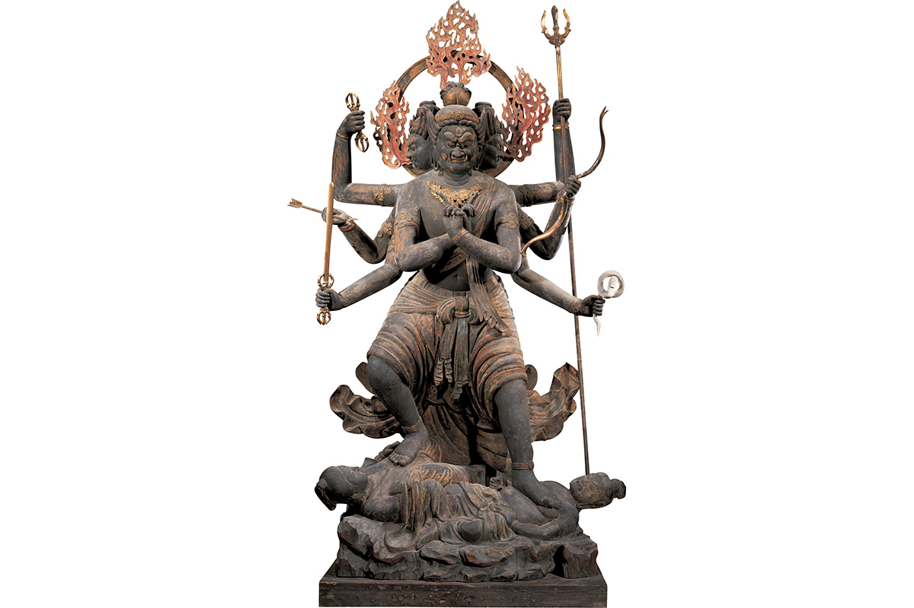
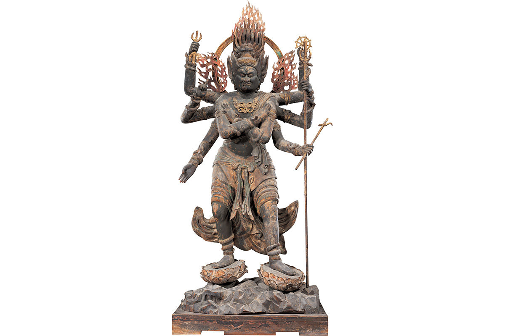
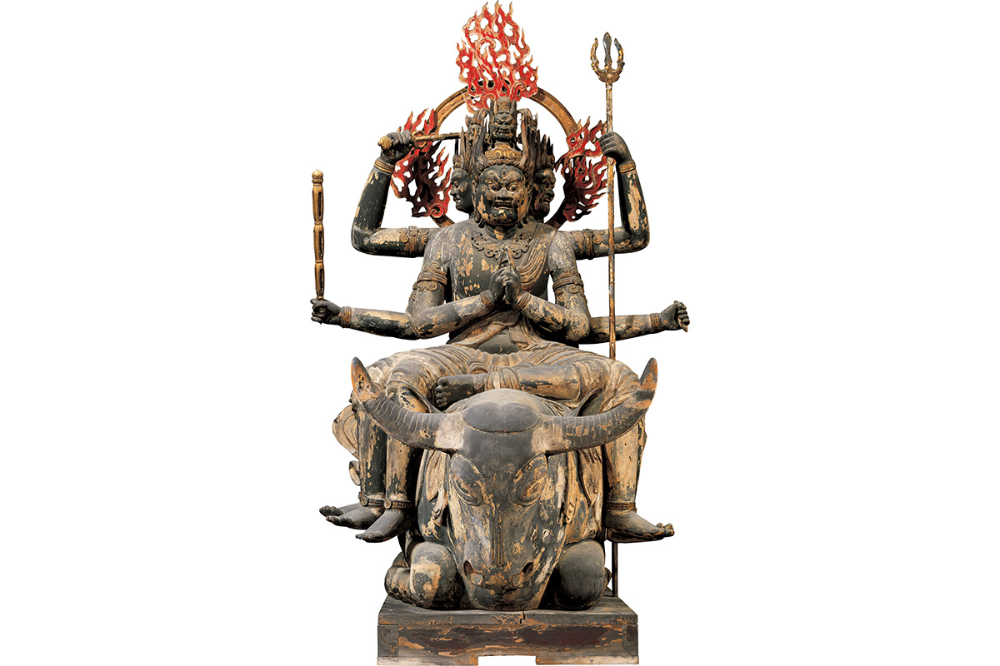
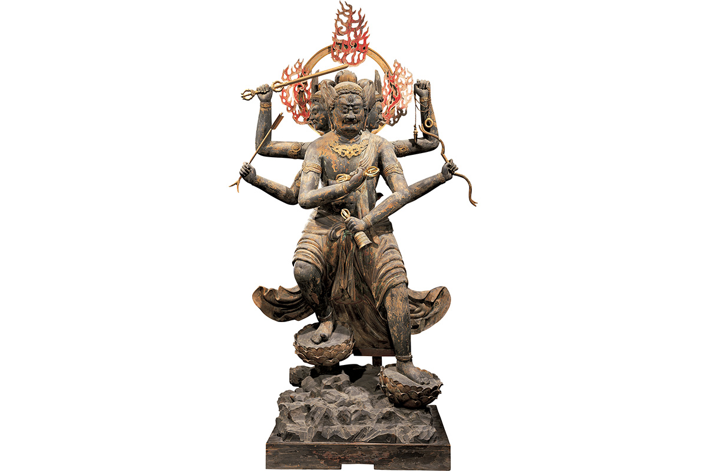
Небесные стражи
Тэн, небожители, тоже пришли в буддизм из индийских мифов. Одни вооружены, как четыре небесных царя, другие кротки. По краям помоста стоят двое высших: Бонтэн на востоке, индийский Брахма, и Тайсякутэн на западе, бог-воитель Индра. До эзотерического учения их изображали в китайских придворных одеждах, а здесь у Бонтэна четыре лица и четыре руки и голый торс, а Тайсякутэн в лёгкой ткани через плечо. Бонтэн сидит на лотосе, который держат четыре гуся, Тайсякутэн едет на белом слоне. Обе статуи много раз чинили, и от IX века у Бонтэна остались только среднее лицо с тремя глазами, правая сторона тела и ноги, а у Тайсякутэна только правая сторона.
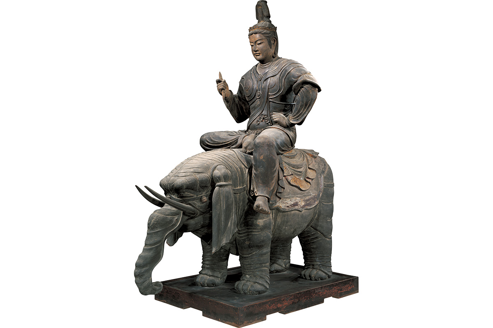
Четыре небесных царя стерегут стороны света на склонах мировой горы Сумеру: Дзикокутэн восток, Дзотётэн юг, Комокутэн запад, Тамонтэн север. Обычно гневным изображали одного или двоих из четырёх, а в Тодзи гневаются все. Каждую статую вместе с подставкой вырезали из одного ствола. Дзикокутэн замахнулся правой рукой, широко раскрыл глаза и рот. У Дзотётэна глаза раскрыты ещё шире, и только он из четверых повернул голову влево. Комокутэн видит весь мир насквозь, а Тамонтэн под именем Бисямонтэн входит ещё и в число семи богов счастья. Он держит маленькую пагоду, а ноги его поддерживает богиня земли.
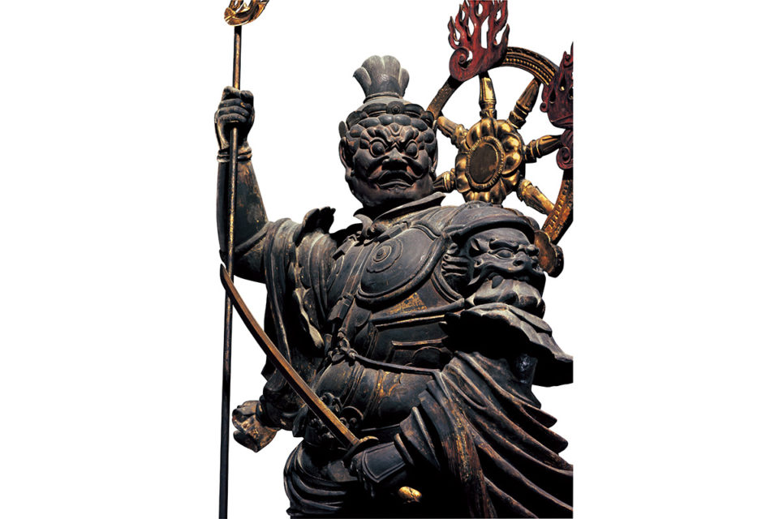
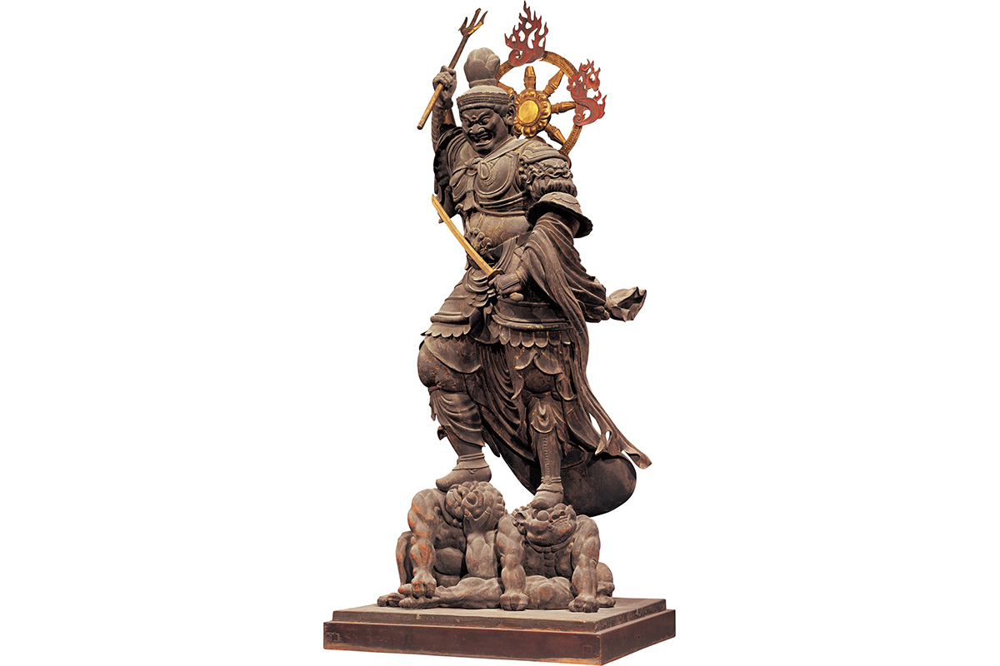
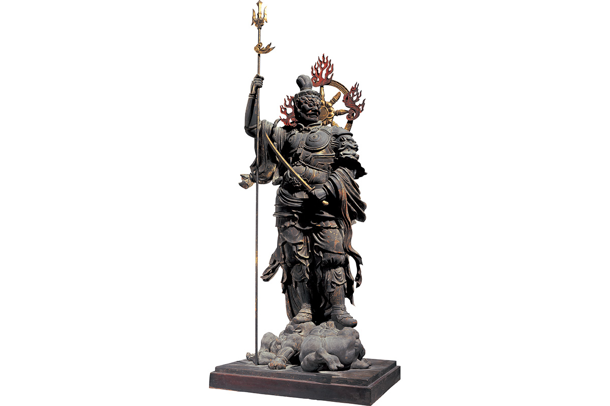
Наследие
Школа для всех и встреча у зала Миэйдо
Кукай верил, что образование создаёт людей, а люди создают страну. К востоку от Тодзи он открыл «Сюгэй-сютиин», которую называют первой частной школой Японии. Внутри храмовой территории до сих пор работают старшая школа Ракунан и средняя школа при ней, и учат там по заветам Кукая. Малый храм Кантиин при Тодзи был учёным центром школы Сингон, здесь изучали эзотерическое учение и хранили много произведений искусства. Главная его статуя, пять бодхисаттв Кокудзо, воплощения мудрости, перевезена сюда учёным монахом из другого храма Киото.
Писатель Рётаро Сиба (1923–1996), автор многих исторических романов и книги о Кукае, приглашая знакомых в Киото, обычно назначал встречу одинаково: «У зала Миэйдо в Тодзи». Пагоду видно и из окна синкансэна, и из здания вокзала. И при императорах Хэйан, и сегодня Тодзи остаётся воротами в Киото.
Храм Тодзи
- Адрес
- префектура Киото, Киото, район Минами, Кудзё-тё, 1
- Телефон
- +81 75-691-3325
- Как добраться
- около 15 минут пешком от выхода Хатидзё-гути вокзала Киото
- Сайт
- toji.or.jp
Фото: Сатоси Ясукоти, Марико Тая, Бэнридо.